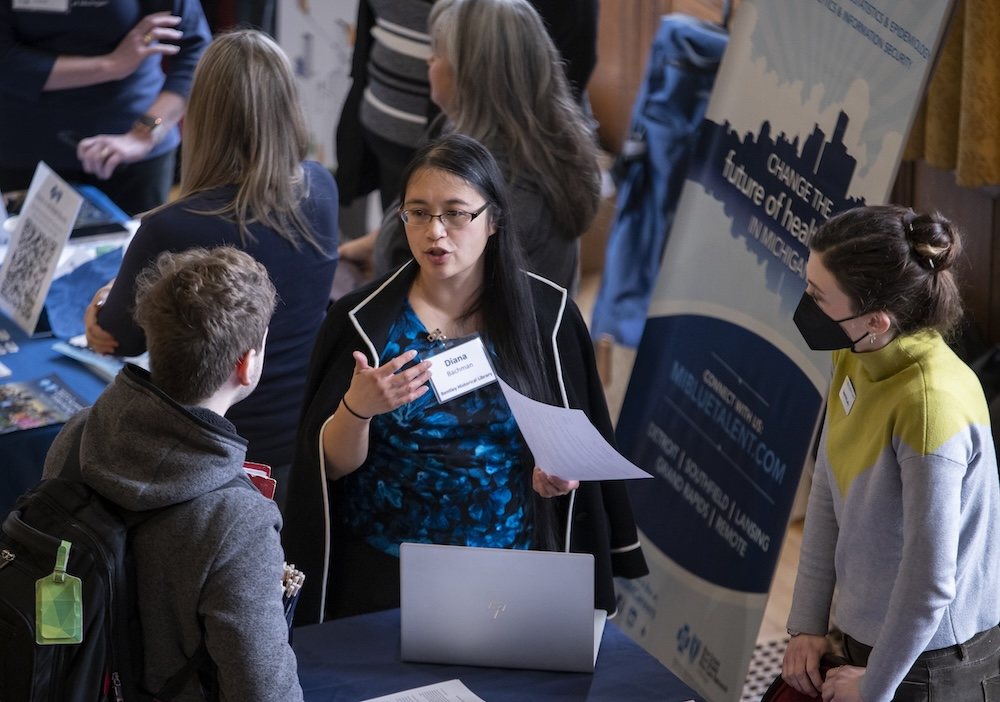
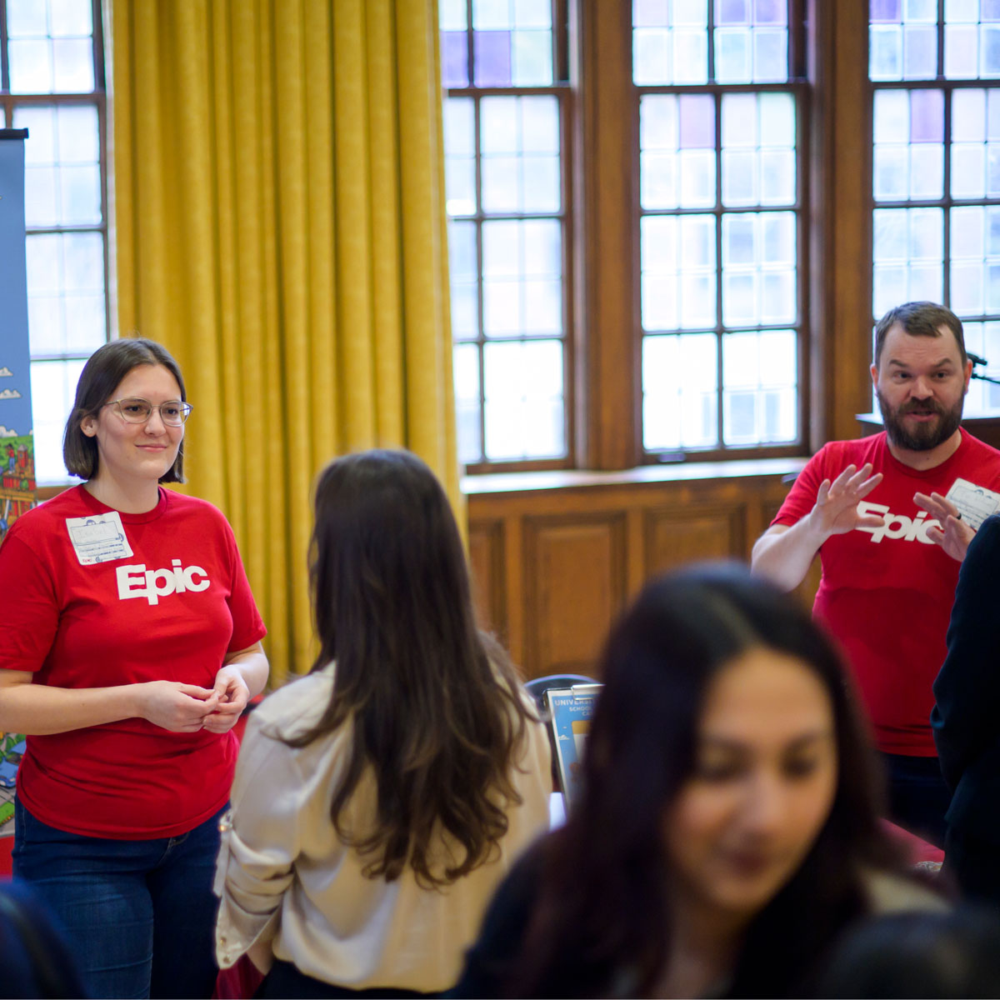

Networking and Building Connections

Build Meaningful Mentorships
The path to career success is rarely traveled alone. At UMSI, networking is centered on building meaningful, long-term relationships with professionals who understand the evolving landscape of information, technology, and design. Through mentorship, students gain insight not only into specific roles and industries, but also into the real-world decisions, challenges, and growth paths professionals have experienced firsthand.
UMSI connects students with alumni and industry professionals through structured programs like UCAN, career panels, and informal coffee chats. These conversations create opportunities to ask questions, seek advice, and gain clarity on career goals in a low-pressure, supportive environment. Whether you are exploring different paths or preparing to enter a specific field, mentorship provides guidance, encouragement, and perspective at every stage of your journey.
Master the Digital Handshake
In today’s global and increasingly digital job market, your online presence often serves as your first introduction to employers, recruiters, and alumni. A strong digital handshake allows you to communicate your skills, interests, and professional identity before ever meeting someone in person. UMSI offers guidance to help you present yourself clearly and confidently across digital platforms.
From refining your LinkedIn profile to showcasing coursework, research, and projects, these resources help you translate your academic experiences into professional value. Learning how to engage authentically online, reach out thoughtfully, and follow up effectively ensures that your networking efforts are both visible and impactful.
- Informational Interviews: Learn how to ask for 15 minutes of an alum's time to learn about their career path.
- Elevator Pitch: Develop a 30-second introduction that clearly communicates your UMSI expertise.
- The Follow-Up: Master the 24-hour thank you note to solidify your new connection.
- Alumni Events: Join us for "Ask Me Anything" sessions with UMSI graduates.
Network Like a Victor

Networking is more than exchanging contact information—it is about cultivating relationships built on curiosity, respect, and shared interests. As a UMSI student, you are part of a global Michigan alumni network that values connection and mentorship. Learning how to engage intentionally with this community allows you to build professional relationships that extend well beyond a single conversation.
Through informational interviews, employer events, and alumni outreach, students develop the skills needed to connect with professionals in a way that is authentic and professional. By following up thoughtfully and staying engaged, you transform brief interactions into lasting connections that can support your career growth long after graduation.